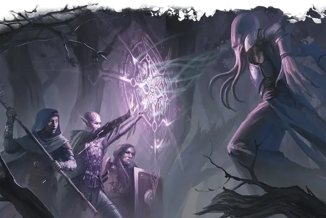

Крепость интеллекта
Intellect Fortress
3 уровень, Ограждение

Время сотворения 1 действие
Дистанция 30 футов
Компоненты В
Длительность Концентрация, вплоть до 1 часа
Классы Бард, Волшебник, Изобретатель, Колдун, Чародей
В течение длительности заклинания вы или одно согласное существо, которое вы можете видеть в пределах дистанции, имеете сопротивление урону психической энергией, а также совершаете с преимуществом спасброски Интеллекта, Мудрости и Харизмы.
На больших уровнях. Когда вы накладываете это заклинание, используя ячейку 4-го уровня или выше, вы можете сделать целью заклинания дополнительных существ, по одному за каждый уровень ячейки выше третьего. Все цели заклинания должны быть в пределах 30 футов друг от друга во время накладывания заклинания.